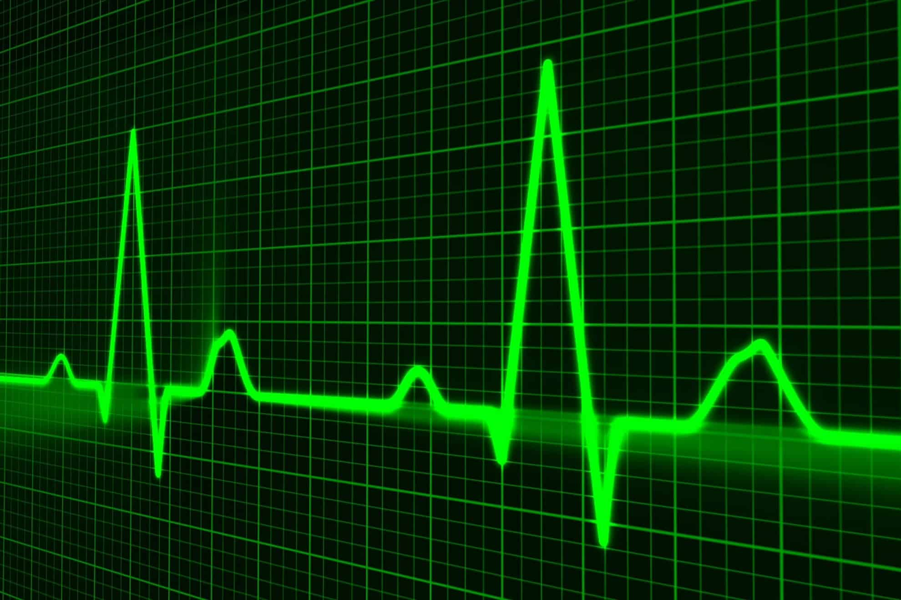

En el campo de la medicina, el número de veces que el corazón late durante cierto periodo, por lo general un minuto. El pulso se puede sentir en la muñeca, el lado del cuello, la parte de atrás de las rodillas, la parte de adelante de los pies, la ingle y otros lugares del cuerpo donde haya una arteria cerca de la piel. El pulso en reposo normalmente oscila entre 60 y 100 latidos por minuto en un adulto sano en estado de reposo. La medición del pulso proporciona información importante sobre la salud de una persona. También se llama frecuencia cardíaca.
El pulso se mide manualmente con los dedos índice y medio. Cuando se palpa la arteria carótida, la femoral o la braquial se tiene que ser muy cuidadoso, ya que no hay una superficie sólida como tal para poder detectarlo.